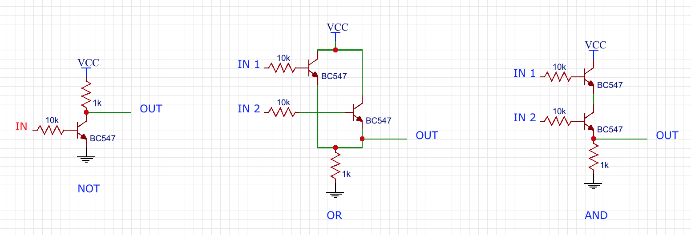
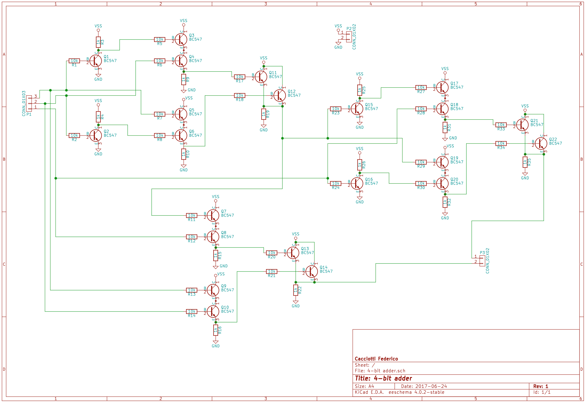

This logic circuit is a group of binary adders called full adders. It calculate the sum of a pair of four-bit numbers using the following scheme.

Each of these modules, connected in series, is able to compute the sum of two single bits $A$ and $B$ and, eventually, it keeps in mind the presence of carry in $C_{in}$. The output is the sum $S$ and carry out $C_{out}$.
I designed the logic circuit using only transistors and resistors. In the next image you can see how to create a logic gate like AND OR NOT gates using only these components. For this project I chose BC547 NPN transistors.
The complete scheme of a single adder module is the following.
